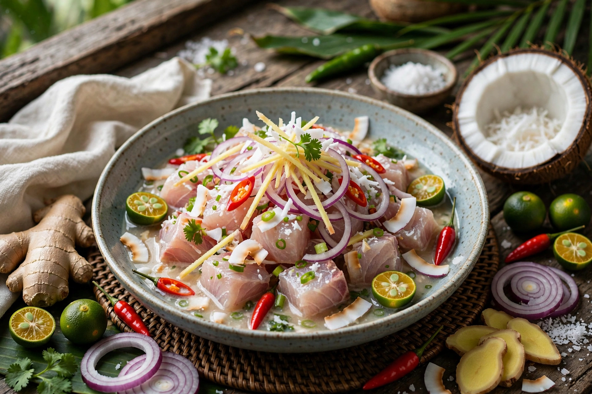

| Kinilaw | |
|---|---|
 | |
| Course | Appetiser / pulutan |
| Place of origin | Philippines |
| Main ingredients | Raw fish, vinegar or citrus, ginger, onion, chilli |
Kinilaw (literally "eaten raw") is a Filipino raw seafood dish prepared like a ceviche, in which fresh fish or shellfish is "cooked" by denaturing in vinegar — traditionally coconut vinegar or tuba — or calamansi juice, with ginger, onion, chillies and often coconut milk.
Kinilaw predates Spanish colonisation by centuries; excavations at Butuan unearthed tabon-tabon fruit rind used as a traditional ingredient roughly a thousand years old. Regional versions include kilawin (also applied to lightly cooked meats in the north), sinuglaw (kinilaw with grilled pork), and versions using tuna, tanigue (mackerel), shrimp, oysters or sea urchin.
The fish is briefly washed in vinegar, drained, then dressed; prolonged soaking toughens it, so kinilaw is eaten immediately, often as pulutan with drinks.